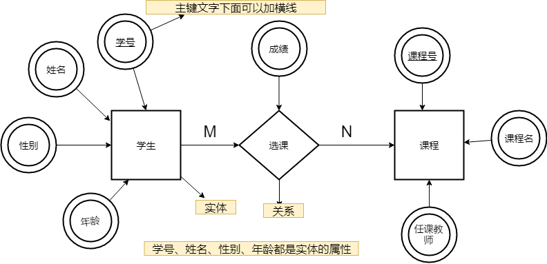

摘要：计算机基础之数据库，包括SQL语句书写，数据类型，索引/锁，MySQL等。
[TOC]
可视化的、面向对象的、软件开发的工业标准。
在 UML 系统开发中有三个主要模型：
<<abstract>>：抽象类is-a，eg：自行车是车、猫是动物。时序图：显示对象间交互与协作关系，清晰立体地反映系统的调用纵深链路。按时间顺序排列。
顺序图：显示参与交互的对象及其对象间消息交互的顺序。
包括的建模元素主要有：
NoSQL 非关系型数据库：关系数据库在一些数据敏感的应用中读写性能较差，如为海量文档创建索引、高流量网站的网页服务，及发送流式媒体，故采用 NoSQL；优点：高效读写海量数据，支持高并发；支持 key-value、文档、图片等形式，可用硬盘或随机存储器作为载体，不支持SQL；包括：
数据库按照数据结构来组织、存储和管理数据，共有三种模型：
id：用于唯一标识一条记录的某个属性，不可重复、不可空，一个表只能有一个主键。unique + not null；基本原则：选取完全业务无关的字段，不可用身份证号、手机号、邮箱地址等（看上去唯一但可能会更改）。可用作 id 字段的类型有：
不用外键与级联更新，一切外键概念必须在应用层解决：
如：学生表中的 student_id 是主键，那么成绩表中的 student_id 则为外键。如果更新学生表中的 student_id，同时触发成绩表中的 student_id 更新，即为级联更新。
Y 函数依赖于 X，写作 X → Y。X→Y，且存在 X 的一个真子集 X0（部分关键字），使得 X0→Y，则称 Y 对 X 部分函数依赖。
用于规范建表，划分字段。
1NF（第一范式）：对属性的原子性约束，要求属性（表中的字段）不可再分（为其他字段）。是所有关系型数据库的最基本要求，即创建的表一定满足第一范式。2NF（第二范式）：对记录的惟一性约束，要求主键可以唯一标识记录。在 1NF 基础上，消除了非主属性对于码的部分函数依赖，非主属性都依赖于主键。3NF（第三范式）：对字段冗余性的约束，要求字段没有冗余，即任何字段不能由其他字段派生出来。在 2NF 基础上，消除了非主属性对于码的传递函数依赖（任何非主属性不依赖于其它非主属性）。基本上解决了数据冗余，插入异常，修改异常，删除异常的问题。BCNF：主属性内部不能有部分或传递依赖。数据库设计就是建立数据存储模型。
E-R 图。E-R 图 / 实体-联系图：表示实体类型、属性和联系。
E-R 图中的冲突有三种：属性冲突、命名冲突、结构冲突。

数据库实际的关系模型：

UML 类图
见设计模式。
是一种关系型数据库：用于持久化存储系统中的数据，建立在关系模型的基础上。
MySQL 的命名机制由 3 个数字和 1 个后缀组成，如 mysql-5.7.20：
源自Github 上面的语义化版本标准
5 是主版本号：用于描述文件的格式，所有版本 5 的发行版都有相同的文件夹格式。表示做了不兼容的 API 修改。7 是发行级别：表示做了向下兼容的功能性新增；+ 主版本号组合 = 发行序列号，描述了稳定的特征集。20 是在此发行系列的版本号：随每次新发行的版本递增。表示做了向下兼容的问题修正。通常选择已发行的最新版本。127.0.0.1:3306，可用远程IP。mysql -h 127.0.0.1:3306 -u root -p
mysqld start/stop/restatr/status
数据库和表的字符集统一用 UTF8，兼容性更好。
CHARACTER SET UTF8
乱码的本质： 编码和解码时用了不同或不兼容的字符集 。
二者表示的含义不同，在不同编码中，字符和字节的对应关系不同。
ASCII 字符集和编码：用 7 bits 位表示一个字符，共 128 个字符，包括控制字符、英文大小写字符、阿拉伯数字、英文标点符号等；
ASCII 扩展字符集用 8 bits 位表示一个字符，共 256 个字符；一个英文字符占 1Byte；GB2312 字符集和编码：一个英文字符占 1Byte，和 ASCII 码相同；非英字符（如中文）占 2Byte。涵盖了绝大部分常用汉字，不支持部分生僻字和繁体字。
GBK：兼容并扩展 GB2312 字符集；BIG5 字符集&编码：支持港澳台繁体中文；Unicode 字符集和 UTF 编码：包含了世界上几乎所有已知字符。
UTF-8 字符编码方案：是一种针对 Unicode 的可变长度字符编码（定长码），也是一种前缀码，可用来表示 Unicode 标准中的任何字符，且其编码中的第一个字节仍与 ASCII 兼容；用 1-4 个字节为每个字符编码；目前使用最广，所有互联网协议都支持；UTF-16 字符编码方案：一个英文字母字符或一个汉字字符存储都需 2 个字节（Unicode 扩展区的一些汉字存储需 4 个字节）；UTF-32 字符编码方案：任何字符的存储都需 4 个字节。MySQL 字符集中有两套 UTF-8 编码的实现：
utf8 ： 只支持1-3个字节 ；一个英文字符占 1Byte，和 ASCII 码相同；一个中文字符占 3Byte；utf8mb4 ： UTF-8 的完整实现，可存储 emoji 符号、较复杂的文字、繁体字，占 4 个字节。SELECT LENGTH("轻松工作"); -- 返回为 12
SELECT CHARACTER_LENGTH("轻松工作"); -- 返回为 4
MySQL 数据类型及对应的 Java 包装类、JDBC 类型。

注意：类型应为大写，暂用小写便于记忆；大于显示宽度也可插入。
数据类型及主要用法（字段类型选择原则）：
数值类型：可用 UNSIGNED 修饰；
tinyint unsigned（1 Byte）：0 ~ 255，可表示 Bool；smallint（2 Byte）：0 ~ 65535；mediumint（3 Byte）：0 ~ 1677w；对应 Java 中的 Integer 类型；int/integer（4 Byte）/int(M位数)：0 ~ 42亿；bigint（8 Byte）：对应 Java 中的 Long 类型，否则可能会 Integer 溢出。如 id unsigned bigint not null auto_increment, primary key (id)。(精度M, 标度D)，分别表示（总位数/显示宽度，小数位数）。注意浮点数相减和比较运算时易出问题。
float(M, D小数位数)：比较粗略但开销相对较少，常用浮点型；对应 JDBC 中的real（4 Byte）；double(M, D)（8 Byte）decimal(M, D小数位数)：优点是不存在舍入误差，值和计算都是精确的。不同于浮点数的四舍五入，实际上是以字符串的形式存放；用于对精度要求较高时，如金额、货币、科学数据；占用空间由定义的宽度决定，每 4 个字节可存储 9 位数字，且小数点占用1 Byte。numeric0，不能存为数值类型。对应 Java 中的 String，length() 返回的是 char（占 2Byte ）的数量。
CHAR(M)：固定长度，存入的数据均占 M 字节，1 <= M <= 255；会自动删除插入数据尾部的空格；处理速度快，但浪费空间。VARCHAR(M)VARCHAR(N)：可变长度，MySql 5.0 之后的版本，指最多存储 N 个字符（数字、字母或汉字）的数据；
UTF-8 编码中，一个英文字符占 1 Byte，中文占 3 Byte，故 1 <= 字符数 N <= 65535 / 3；varchar(255) 比 varchar(256)少占用 1 个（记录 N 的额外）字节；tinytext(255), text(65535，64k), mediumtext, longtext(4GB)tinyblob, blob, mediumblob, longblob：避免使用binary, varbinary日期时间类型：统一对应 Java 中的 Date 类；
date：YYYY-MM-DD
year：YYYY：对应 JDBC 中的 DATE；time：HH:MM:SSdatetime（8Byte）：YYYY-MM-DD HH:MM:SS，create_time；对应 JDBC 中的 TIMESTAMP；timestamp（4Byte）：YYYY-MM-DD HH:MM:SS；用于需记录时区的 create_time；
int(timestamp) > datetime > char > varchar。用 int 存储时间取值范围为 1970-01-01 00:00:01 ~ 2038-01-19-03:14:07，超出范围的用 DATETIME，还需转换为时间，若访存频繁则用 datetime。# 用于需记录时区的 create_time
INSERT INTO time_zone_test(date_time, time_stamp) VALUES(NOW(), NOW());
其它类型
enum(‘v1’, ...)：最多 65535 个元素；从多个值中取一个时用 ENUM；避免使用；set(‘v1’, ...)：最多 64 个成员；取多个值时用SET；
CREATE TABLE tab ( gender SET('man', 'woman', 'no') );
INSERT INTO tab VALUES ('man', 'man');
char VS varchar：
< 50个字节时用 char （除了个别很少用到的字段，也可用 varchar 来节省空间）；标准 SQL ：指符合国际标准的 SQL；
方言：各数据库支持的各自扩展功能。
CREATE、ALTER、DROP 等语句；主要用于定义数据库/表结构、视图、索引和触发器等对象。主要由 DBA 数据库管理员使用。INSERT、UPDATE、DELETE 语句；用于插入、更新、删除表记录。SELECT 语句；用于查询表记录，最频繁的数据库操作。GRANT：增加用户权限；REVOKE：收回用户权限；COMMIT：确认对数据库中的数据进行的变更；ROLLBACK：取消对数据库中的数据进行的变更。-- 允许远程连接的 IP 地址，“%”表示不限制连接的 IP
-- 123456 为用户密码
MySQL> grant all PRIVILEGES on <数据库名.表名> to root@'127.0.0.1/%' identified by '123456' [WITH GRANT OPTION];
-- 开启MySQL的远程帐号，立即生效
FLUSH PRIVILEGES;
mysql -uroot -prootcreate database testshow databasesuse testshow tablesdrop database testcreate table emp(ename varchar(10),hiredate date,sal decimal(10,2),deptno int(2))
create table dept(deptno int(2),deptname varchar(10))desc empshow create table emp \Gdrop table empalter table emp modify ename varchar(20)alter table emp add column age int(3)alter table emp drop column agealter table emp change age age1 int(4)alter table emp rename emp1创建：CREATE database [IF NOT EXISTS] <数据库名> / table <表名>
[[DEFAULT] CHARACTER SET <字符集名>]
[[DEFAULT] COLLATE <校对规则名 utf8_chinese_ci>];
DROP database [ IF EXISTS ] <数据库名> / table 表名;USE <数据库名>;ALTER TABLE <表名> [修改选项]：
ADD COLUMN <新列名> <类型> [约束条件] [FIRST | after <已存在的列名>]CHANGE COLUMN <旧列名> <新列名> <新列类型不能为空>ALTER COLUMN <列名> { `SET DEFAULT` <默认值> | DROP DEFAULT }DROP COLUMN <列名>RENAME TO <新表名>，`rename table old_db.tb to new_db.tb`;-- 如果数据库中存在user_accounts表，就从数据库中删除
DROP TABLE IF EXISTS `user_accounts`;
-- 创建数据库表
CREATE TABLE `user_accounts` (
`id` int(100) unsigned NOT NULL AUTO_INCREMENT primary key,
`password` varchar(32) NOT NULL DEFAULT '' COMMENT '用户密码',
`reset_pwd` tinyint(32) NOT NULL DEFAULT 0 COMMENT '用户类型：0-不需重置密码；1-需重置',
`mobile` varchar(20) NOT NULL DEFAULT '' COMMENT '手机',
`create_at` timestamp(6) NOT NULL DEFAULT CURRENT_TIMESTAMP(6),
`update_at` timestamp(6) NOT NULL DEFAULT CURRENT_TIMESTAMP(6) ON UPDATE CURRENT_TIMESTAMP(6),
-- 创建唯一索引，不允许重复
UNIQUE INDEX idx_user_mobile(`mobile`)
)
ENGINE=InnoDB DEFAULT CHARSET=utf8
COMMENT='用户表信息';
SHOW CREATE TABLE <数据表名>;
desc/describe `sys_user`;
PRIMARY KEY：主键，不可空、不可重复；UNIQUE：唯一索引（唯一约束），可空、不可重复，可在多个字段定义；主键和唯一约束的创建需依靠索引，没有已建好的索引，Oracle 会自动建立唯一索引。AUTO_INCREMENT：自动增长约束，必须为索引（主键或 unique），只能用于一个字段、不可为空（NOT NULL ）；只能是整数类型，默认从1开始，通过表属性 auto_increment = x 设置起始值；FOREIGN KEY：外键约束；DEFAULT <默认值>：当前字段的默认值；NULL 约束：表示当前列可为 null；
NOT NULL 约束：在添加数据时没有指定值会报错；常搭配 AUTO_INCREMENT 用于 id 字段；CHECK：检查约束；COMMENT：注释； 用于区分MYSQL的保留字与普通字符、识别符，如用于表名、列名等，如 `status`；单引号 '' 、双引号用于字符串。-- 在定义完列后直接用关键字指定约束
<字段名> <数据类型> 约束关键字/UNIQUE
ALTER TABLE <数据表名> ADD CONSTRAINT <约束名> UNIQUE(<列名>);
ALTER TABLE <数据表名> CHANGE COLUMN <字段名> <数据类型> DEFAULT <默认值>/NULL;
ALTER TABLE <表名> DROP INDEX <约束名>;
grant select,insert on test.* to 'test'@'localhost' identified by '123'revoke insert on test.* from 'test'@'localhost'show variables like 'character%'create database mall character set utf8set global time_zone = '+8:00';set time_zone = '+8:00'flush privilegesgrant all privileges on *.* to z1@localhost identified by '123'grant all privileges on *.* to z1@localhost with grant optiongrant super,process,file on *.* to z3@localhostgrant usage on *.* to z4@localhostshow grants for z1@localhostset password = password('123')set password for 'z1'@'localhost' = password('123')drop user z2@localhost在表查询中，一律不要使用 * 作为查询的字段列表，需要哪些字段必须明确写明。
只返回某些列 SELECT 列1 别名1, 列2 别名2 FROM …
每一行都两两拼在一起，行数为多表的乘积，结果集可能非常巨大
SELECT
s.id sid,
s.name,
s.score,
c.id cid,
c.name cname
FROM students [AS] s, classes [AS] c
WHERE s.gender = 'M' AND c.id = 1;
[GROUP BY <group>
[HAVING <expression> [{<operator> <expression>}…]]
[ORDER BY <order>]
[LIMIT[<offset>,] <row count>]
运算符：
and, or, not, xor：返回NULL、0、1
&&, ||, !,
<=, <, >=, >,
=, !=/<>, <=>
is [not] null，更推荐ISNULL()
[not] between and：包括起始值和终止值
[not] like [BINARY区分大小写]："%"代表任何长度的字符串，不能匹配 NULL，"_"代表单个字符
[not] in ... ：尽量不用
is [not] ture/false/unknown：检验某个值的真假
... [NOT] EXISTS
类似where，过滤分组，对分组后/查询结果再次过滤，可用聚合函数、字段别名。
ORDER BY 首选排序字段/别名 排序方式（默认升序ASC/降序DESC） [二次排序字段/别名 ,排序方式] …
LIMIT <记录数> OFFSET <初始位置> 等价于 LIMIT <[初始位置,] 记录数>：初始位置由0开始计数，默认为0
MAX、MIN、COUNT、SUM、AVG；LAST_INSERT_ID()：获取最后插入的AUTO_INCREMENT 属性一起使用；当往带有 AUTO_INCREMENT 属性的字段的表中新增记录时，返回该字段的值。
LAST_INSERT_ID(10) 则返回10；IF 、IFNULL、CASE 和 WHERE 语句等；-- count 计数、统计，返回不同的非NULL值数目：
count(*)：统计值不为 NULL 的行数；
count(列名)：统计此列不为 NULL 值的行数，无结果返回0；
count(distinct col)：计算该列除 NULL 外的不重复行数；
count(distinct col1 , col2)：统计两列均不为 NULL 的行数；如果其中一列全为 NULL，即使另一列有不同的值，也返回为 0。
-- sum 求和，无结果或全为NULL时返回NULL，需注意 NPE 问题。下同
-- avg 求平均值
-- max/min 求最大/小值，不限于数值类型
SELECT COUNT(*/id) 聚合列别名 FROM ...
-- 分组聚合子句，得到N行结果<class_id, num>
SELECT COUNT(*) num
FROM students
GROUP BY class_id;
-- 只支持分组的列，按class_id, gender分组:
SELECT class_id, gender, COUNT(*) num
FROM students
GROUP BY class_id, gender;
-- 按性别分组，拼接name，female_Lily？
SELECT `sex`, GROUP_CONCAT(name)
FROM tb_students_info
GROUP BY sex;
-- DISTINCT, ALL 选项：去除重复记录
SELECT DISTINCT name,age FROM student; -- name不同、age相同不统计？
SELECT COUNT(DISTINCT name,age) FROM student;
-- AS 语法 用于为表或列(字段)提供临时名称(别名)。
select t1.name from table_1 as t1, table_2 as t2 where t1.id = t2.id;
-- 为子查询结果集指定别名
SELECT * FROM (SELECT * FROM result) AS Temp;
-- group_concat 返回带有来自一个组的连接的非NULL值的字符串结果。组内字符串连接。
对多个表进行 JOIN 运算，先确定一个主表作为结果集，然后选择性地“连接”其他表的行。
[INNER] JOIN ON：OUTER JOIN
LEFT [OUTER] JOIN：必须返回左边表的记录，右表可能返回 null；RIGHT [OUTER] JOINFULL [OUTER] JOIN：取并集，彼此没有对应的值为 null。cross join：结果是笛卡尔积，就是第一个表的行数乘以第二个表的行数。on 和 where 条件的区别：on是 join on 的条件，先运行生成临时表，再根据 where 筛选；
on 条件在生成临时表时使用，条件不为真也会返回左表中的记录。不管 on 中的条件是否为真，都会返回左边表中的记录。where 条件是在临时表生成好后，再对临时表进行过滤。这时已没有 left join 的含义（必须返回左边表的记录），条件不为真的就全部过滤掉。union VS union all：都用于合并两个或多个 SELECT 语句的结果集。
union：取唯一值，记录没有重复；进行表连接后会筛选掉重复的记录，Union All 不去除重复记录。union all：直接连接，取到的是所有值，记录可能有重复；insert into emp (ename,hiredate,sal,deptno) values ('zhangsan','2018-01-01','2000',1)insert into emp values ('lisi','2018-01-01','2000',1)insert into dept values(1,'dept1'),(2,'dept2')update emp set sal='4000',deptno=2 where ename='zhangsan'
delete from emp where ename='zhangsan'
select * from empselect distinct deptno from empselect * from emp where deptno=1 and sal<3000select * from emp order by deptno desc limit 2select deptno,count(1) from emp group by deptno having count(1) > 1select * from emp e left join dept d on e.deptno=d.deptnoselect * from emp where deptno in (select deptno from dept)select deptno from emp union select deptno from dept返回 WHERE 条件匹配的行数及操作的行数。
INSERT [INTO] `user_info` [name, age] VALUES ("Tom", 21), ("Jack", 13);
INSERT [INTO] `user_info` name="Tom", age=21;
-- 插入，如果已存在则更新
INSERT INTO students (id, name, gender, score) VALUES (1, '小明', 'F', 99) ON DUPLICATE KEY UPDATE name='小明', gender='F', score=99;
DELETE FROM user_info WHERE ...
UPDATE user_info
SET age=22, score=score+10
WHEN name="Tom" and score<80;
drop table 表名（删除表结构）： 释放表占用的空间。truncate table 表名（清空表中数据） : 用于删除表内的数据和索引，但不删除表本身。把自增值重置和索引恢复到初始大小等。delete from 表名 where 列名=值（删除某些行的数据） : 不加 where 子句同truncate table 表名。truncate 和 drop 属于 DDL语句，原数据不放到 rollback segment 中，操作立即生效，不能回滚，操作不触发 trigger。有可能造成事故，故不建议使用。delete 是 DML 语句，操作会放到 rollback segement 中，事务提交后才生效。DELETE 删除数据后，配合事件回滚可找回数据；TRUNCATE 不支持事务的回滚，数据删除后无法找回。drop > truncate > delete。delete命令执行时会产生数据库的binlog日志，逐行一条一条删除记录，因此比truncate慢，好处是方便数据回滚恢复。-- 查找表中多余的重复记录，重复记录是根据单个字段（peopleId）来判断
select * from people
where peopleId in (select peopleId
from people
group by peopleId
having count(peopleId) > 1)
-- 删除表中多余的重复记录，重复记录是根据单个字段（peopleId）来判断，只留有rowid最小的记录
delete from people
where peopleId in (select peopleId from people group by peopleId having count(peopleId) > 1)
and rowid not in (select min(rowid) from people group by peopleId having count(peopleId) > 1)
-- 查找表中多余的重复记录（多个字段）
select * from vitae a
where (a.peopleId,a.seq)
in (select peopleId,seq
from vitae group by peopleId,seq
having count(*) > 1)
-- 删除表中多余的重复记录（多个字段），只留有rowid最小的记录
delete from vitae a
where (a.peopleId,a.seq) in (select peopleId,seq from vitae
group by peopleId,seq having count(*) > 1)
and rowid not in (select min(rowid) from vitae
group by peopleId,seq having count(*) > 1)
-- 查找表中多余的重复记录（多个字段），不包含rowid最小的记录
select * from vitae a
where (a.peopleId,a.seq) in (select peopleId,seq from vitae
group by peopleId,seq
having count(*) > 1)
and rowid not in (select min(rowid) from vitae
group by peopleId,seq
having count(*) > 1)
delete from T limit 10000；
delete from T limit 500；
delete from T limit 500；
tmp_ 为前缀、以日期为后缀，备份表必须以 bak_ 为前缀、以时间戳为后缀；WHERE 从句或 ORDER BY、GROUP BY、DISTINCT 中的字段；存储引擎：如何存储数据并建立索引，更新、查询数据等技术的实现方法。
MyISAM 只有表级锁（对整张表加锁，不利于并发写），而 InnoDB 支持行级锁和表级锁（高并发下性能更好），支持MVCC（行级锁的一个升级）。InnoDB 支持事务：有提交、回滚和崩溃恢复能力；用于计费或财务系统等对数据准确性要求比较高的；InnoDB 支持外键；支持集群索引；索引：是一种用于快速查询和检索数据的数据结构，相当于目录的作用。实质上是一张描述索引列的列值与原表中记录（行）间一 一对应关系的有序表。
优点：大大加快数据检索速度；
缺点 ：创建和维护索引耗时间和空间。当对表中的数据增删改时，需同时修改索引，降低 SQL 执行效率。
索引的效率取决于索引列的值是否散列，即该列的值如果越互不相同，那么索引效率越高。
常见的索引结构有: B 树， B+ 树和 Hash 表。
哈希表：是键值对的集合，用哈希算法通过键（key）即可快速取出对应的值（value）。
缺点：
HashMap 用链地址法；HashMap 用红黑树；二叉树及其变种的其他树都不能支撑索引的需求，原因是插入数据的性能较低，且树的深度无法控制， 过深造成 IO 次数变多，影响读取数据的效率。
B 树 VS B+ 树：
B 树的所有节点存放键和数据，而 B+ 树只有叶子节点存放 key 和 data，其他内节点只存放 key。B 树的叶子节点是独立的；B+ 树的叶子节点有引用链指向相邻的叶子节点。B 树的检索相当于对节点的关键字做二分查找，可能不到叶子节点就找到；而 B+ 树的查找是从根节点到叶子节点。MyISAM 中索引文件和数据文件是分离的，对于 InnoDB 引擎表来说，该表的索引（B+树、表数据文件）的每个非叶子节点存储索引，叶子节点存储索引和索引对应的数据。
NULL；
- 除了索引外，有过哪些SQL优化方面的经验？如分库分表，或通过执行计划查看SQL的优化点。最好是能结合做的实际项目来讲。
CREATE <索引名> ON <表名> (<列名> [<长度>] [ ASC | DESC]);
CREATE TABLE(...
KEY | INDEX | UNIQUE INDEX [<索引名>] [<索引类型>] (<列名>,…)
);
SHOW INDEX FROM <表名> [ FROM <数据库名>];
DROP INDEX <索引名> ON <表名>;
-- 1. 添加 主键索引
ALTER TABLE `table_name` ADD PRIMARY KEY ( `col` )
-- 2.添加 唯一索引
ALTER TABLE `table_name` ADD UNIQUE uni_name ( `col` )
-- 也可只对某一列添加唯一约束而不创建唯一索引：
ALTER TABLE students ADD CONSTRAINT uni_name UNIQUE (name);
-- 3.添加 普通索引
ALTER TABLE `table_name` ADD INDEX index_name ( `col` )
-- 4.添加 全文索引
ALTER TABLE `table_name` ADD FULLTEXT ( `col`)
-- 5.添加多列索引
ALTER TABLE `table_name` ADD INDEX index_name ( `col1`, `col2` )
在 WHERE 和 JOIN 语句中出现的列需建立索引，但也不完全如此：
选用 WHERE 从句或 ORDER BY、GROUP BY、DISTINCT 中的字段；
<，<=，=，>，>=，BETWEEN，IN使用索引；LIKE也会使用索引；但在LIKE以通配符 %和_ 开头做查询时，不会使用索引。如，name like '123%'会走索引；事务：用户定义的一个数据库操作序列，是逻辑上的一组操作；要么全都执行，要么全不执行。如 A 转出钱与 B 收到钱。
数据库事务：多条SQL 语句要么全部执行成功，要么全部不执行 。
-- 开始事务，显式事务
BEGIN; 或 START TRANSACTION;
UPDATE accounts SET balance = balance - 100 WHERE id = 1;
UPDATE accounts SET balance = balance + 100 WHERE id = 2;
COMMIT;
-- 回滚事务
ROLLBACK;
Atomicity）：事务是最小的原子单位，（事务内的所有 SQL 作为一个原子单元执行），不可再分割。事务中的所有操作要么全部执行成功，要么全部执行失败。
undo log（回滚日志）保证。Consistency）：事务执行前后，状态一致。如不管 A 、B 间如何转账，事务结束后两账户的总钱数与事务执行前一致，都是 5000。Isolation）：当多个用户并发访问数据库时，多个并发事务间要相互隔离。如，操作同一张表时，数据库为每个用户开启的事务，不能被其他事务的操作所干扰。
MVCC 等。Durability）：一个事务被提交后，对数据库中数据的改变是持久的，即使数据库发生故障也不会丢失提交事务的操作。
redo log（重做日志）保证。见 SSM 框架中 Spring 事务管理。
副作用
事务隔离机制：并发处理带来的问题中，更新丢失可完全避免，由应用对数据加锁即可。脏读、不可重读度、幻读，其实都是数据库的一致性问题，必须由一定的事务隔离机制来解决。

数据库的事务隔离越严格，并发副作用越小，但付出的代价也就越大。
READ_UNCOMMITTED（读取未提交）： 最低，允许读取尚未提交的数据变更；
READ_COMMITTED（读取已提交）： 允许读取并发事务已提交的数据；
REPEATABLE-READ（可重复读）： 对同一字段的多次读取结果都是一致的，除非数据是被事务本身所修改；MySQL InnoDB 存储引擎默认支持的隔离级别。
SERIALIZABLE（可序列化）： 最高，完全服从 ACID。所有的事务依次逐个执行，事务间完全不可能产生干扰；串行执行，效率会大大下降。
SET TRANSACTION ISOLATION LEVEL READ UNCOMMITTED;
-- 锁定
LOCK TABLES tbl_name [AS alias]
-- 解锁
UNLOCK TABLES
MySQL 主要分为：
MyISAM、InnoDB、Memory 等。执行流程：
视图：是一种虚拟的表，数据库中只存定义，数据来自所引用的真实表。
CREATE VIEW <视图名> AS <SELECT语句>;
CREATE VIEW v_stu_info (s_id, s_name, d_id, s_age)
AS SELECT id,name,dept_id,age FROM tb_stu_info;
DESCRIBE 视图名;
存储过程：是一组为了完成特定功能的 SQL 语句集合，加了逻辑控制语句。更偏向于业务逻辑。
优点：在业务比较复杂时非常实用，如一个操作需写一大串 SQL 语句。存储过程一旦调试完成通过后就能稳定运行；比单纯 SQL 语句执行要快，因为存储过程是预编译过的。
缺点：存储过程难以调试和扩展，没有移植性，消耗数据库资源。禁止使用。
CREATE PROCEDURE <过程名> ( [过程参数[,…] ] ) <过程体>
[过程参数[,…] ] 格式
[ IN | OUT | INOUT ] <参数名> <类型>
create trigger <触发器名称>
{ before | after} -- 之前或之后触发
insert | update | delete -- 指明激活触发程序的语句的类型
on <表名> -- 操作哪张表
for each row -- 触发器的执行间隔，通知触发器每隔一行执行一次动作，而不是对整个表执行一次。
<触发器SQL语句>
结合事物的四大特性
<input> 、<textarea> 标签等）将恶意 SQL 代码提交给服务器。将 userName 参数拼接到 SQL 语句中，从而构建 SELECT 查询，从数据库中获取当前用户的所有信息。服务端数据验证是在数据提交到服务器上后再验证。客户端数据验证是在数据发送到服务器前，在浏览器上完成验证，包括 HTML5 内置约束验证、JavaScript 自定义表单验证、CSS 伪类选择器。
<form>
<label for="email">Email:</label>
<input type="email" id="email" name="email" required>
<input type="submit" value="Submit">
</form>
// required 属性确保用户必须输入电子邮件地址，而 type="email" 会自动验证输入是否为有效的电子邮件格式。
// 使用正则表达式进行验证
Web 防火墙可检测和阻止最基本的 SQL 注入；
传参用参数占位符 #{}，尽量避免用变量占位符 ${}；
检测用户输入的内容。永远不要信任用户提供的数据，仅在校验通过后才将数据提交给数据库。如：
Hibenate-Validator 框架；Redis：用 C 语言开发的数据库，数据存在内存中（即内存数据库），读写速度非常快。
QPS（Query Per Second）：服务器每秒可执行的查询次数。
用于：
Kafka。支持：
分布式缓存：主要解决单机缓存的容量受服务器限制、且无法保存通用信息的问题。因为本地缓存只在当前服务里有效，如果部署了两个相同的服务，两者间的缓存数据无法共享。
共同点 ：
区别 ：
5大基础数据类型及应用场景
string：简单的 key-value 类型。
set/get/del, mset, setex, strlen, exists, incr/decr, expire, ttl 等。list：即双向链表。支持反向查找和遍历。
rpush/rpop, lpush/lpop, lrange, llen 等。应用场景：实现队列、栈，发布与订阅、消息队列、慢查询。

hash：类似于 JDK1.8 前的 HashMap，内部实现也差不多（数组 + 链表）。是一个 string 类型的 field 和 value 的映射表。
hset/hmset/hget, hgetall, hexists, hkeys, hvals 等。set：类似于 HashSet 。提供了判断某个成员是否在 set 集合内的重要接口，轻易实现交、并、差集的操作。如：共同关注就是求交集。
sadd/spop, smembers, sismember, scard（长度）, sinterstore（交集）, sunion 等。sorted set：比 set 增加了一个权重参数 score，使集合中的元素能按 score 进行有序排列，还可通过 score 的范围来获取元素的列表。有点像 HashMap 和 TreeSet 的结合体。
zadd, zcard, zscore, zrange, zrevrange, zrem 等。bitmap：存储连续的二进制数字（0 和 1）。只需一个 bit 位来表示某个元素对应的值或状态，key 就是对应元素本身。 8 bit 可组成一个 byte，所以会极大的节省储存空间。
setbit/getbit, bitcount, bitop等Redis 基于 Reactor 模式的文件事件处理器，以单线程方式运行，通过I/O 多路复用程序 来监听多个（客户端连接）套接字（Socket），将感兴趣的事件及类型（读、写）注册到内核中并监听每个事件是否发生。
用 I/O 多路复用机制同时监听多个文件描述符的可读和可写状态，一旦收到网络请求就会在内存中快速处理。由于绝大多数的操作都是纯内存的，所以处理速度非常快。

Redis 4.0 之前为什么不用多线程用单线程？
Redis 6.0 之后为什么引入多线程？
默认禁用，需手动打开。
> exp key 60 # 数据在 60s 后过期，expire 命令
(integer) 1
> setex key 60 value # 数据在 60s 后过期，用于string
OK
> ttl key # 查看数据还有多久过期
(integer) 56
通过 过期字典（可看作是 hash 表）来保存数据过期的时间。键指向 Redis 数据库中的 key，值是一个 long long 类型的整数，保存了 key 所指向的数据库键的过期时间（毫秒精度的 UNIX 时间戳）。
Redis 采用的是 定期删除+惰性/懒汉式删除 。
定期删除对内存更友好，惰性删除对 CPU 更友好。
4.0 版本后增加两种 LFU。
volatile：从已设置过期时间的数据集（server.db[i].expires）中，
volatile-lru（least recently used）：淘汰最近最少使用的数据。volatile-lfu（least frequently used）：淘汰最不常用的数据volatile-ttl：淘汰将要过期的数据。volatile-random：任意选择数据淘汰。allkeys：当内存不足以容纳新写入数据时，在键空间中，
allkeys-lru：移除最近最少使用的 key；最常用。allkeys-lfu：移除最不常用的 key。allkeys-random：从数据集（server.db[i].dict）中任意选择数据淘汰。no-eviction：禁止驱逐数据，即新写入操作会报错。没人用。Redis 持久化机制（怎么保证 Redis 挂掉之后再重启数据可进行恢复）
持久化数据：将内存中的数据写入到硬盘。
server.aof_buf 中，然后再根据 appendfsync 配置来决定何时将其同步到硬盘中的 AOF 文件。appendfsync always # 每次有数据修改发生时都会写入AOF文件,严重降低速度
appendfsync everysec # 每秒钟同步一次，显式地将多个写命令同步到硬盘，推荐
appendfsync no # 让操作系统决定何时进行同步
AOF 重写：通过读取数据库中的键值对来实现，程序无须对现有 AOF 文件进行任何读入、分析或写入操作。
BGREWRITEAOF 命令时，Redis 服务器会维护一个 AOF 重写缓冲区，该缓冲区会在子进程创建新 AOF 文件期间，记录服务器执行的所有写命令。不建议使用
MULTI命令：可输入多个命令，放到队列，当调用了 EXEC 命令再执行所有命令；DISCARD命令：取消一个事务，清空事务队列中保存的所有命令；WATCH命令：用于监听指定的键；当调用 EXEC 命令执行事务时，如果一个被 WATCH 命令监视的键被修改的话，整个事务都不会执行，直接返回失败。> MULTI #开始事务
OK
> SET USER "Guide哥" #命令入队(批量操作 Redis 的命令，先进先出（FIFO）的顺序执行)
QUEUED
> GET USER
QUEUED
> EXEC #执行事务
1) OK
2) "Guide哥"
不满足原子性（和持久性）
Redis 事务在运行错误的情况下，除了执行过程中出现错误的命令外，其他命令都能正常执行。且不支持回滚操作。不满足“要么全部完成，要么完全不起作用”。
bigkey：key 对应的 value 所占用的内存较大。如 string 类型的 value 超过 10 kb，复合类型的 value 包含的元素超过 5000 个（对于复合类型的 value，不一定包含的元素越多，占用的内存就越多）。
缓存穿透、击穿：大量请求的 key 根本不存在于缓存中，导致请求（没有经过缓存）直接到数据库上。
解决方法：
适合读请求较多的场景。
写请求：
读请求 :
缺陷：
首次请求数据一定不在 cache 的问题：可将热点数据提前放入cache 中。
写操作较频繁导致cache中的数据会被频繁被删除，影响缓存命中率 。
解决办法：
如果更新数据库成功，而删除缓存这一步失败的情况的话，简单说两个解决方案：
服务端把 cache 视为主要数据存储，从中读写数据。cache 服务负责将此数据读取和写入 DB，从而减轻应用程序的职责。少见。
写（Write Through）：
读(Read Through)：
和 Read/Write Through Pattern 很相似，两者都是由 cache 服务来负责 cache 和 DB 的读写。
但又有很大不同：Read/Write Through 是同步更新 cache 和 DB，而 Write Behind Caching 则是只更新缓存，不直接更新 DB，改为异步批量的方式来更新 DB。少见。